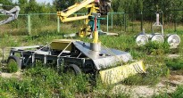
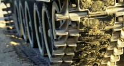
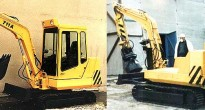

Чернобыль и Роботы
{kind=link}
Робот - ДУА
Пожалуй, единственным положительным последствием радиационной катастрофы на ЧАЭС 1986 года является то, что авария послужила мощным импульсом развития гражданской робототехники в СССР. На момент аварии оказалось, что в стране первой запустившей человека в космос, обладающей мощнейшей научной базой по разработке автоматических аппаратов для покорения Луны и Марса, отсутствовали роботы и роботизированные средства способные помочь человеку в чрезвычайных ситуациях на земле. Роботы – способные войти в горящее здание или обследовать участки с высоким радиационным фоном не разрабатывались и не производились. Чернобыльская авария открыла глаза и на эту проблему. Оказалось, что часть работы по очистке (дезактивации) зданий Чернобыльской АЭС просто невозможно выполнить без автоматических, дистанционно-управляемых систем – уровни радиационного загрязнения исключали присутствие человека. Также роботы требовались и после эпохального строительства укрытия над разрушенным реактором.
{kind=link}
Робот магнитоход на ЧАЭС
Радиационно-опасный Саркофаг требовал изучения состояния внутренних конструкций. Выполнить эту работу было чрезвычайно сложно. Уровни радиационного фона во внутренних помещениях Саркофага составляли десятки и сотни Рентген, что требовало применения специальных роботов для разведки. Впоследствии эти системы так и стали называться – робот-разведчик.
Проектированием и испытанием роботов для Чернобыля занималось большое количество ученых, институтов и конструкторских бюро. Над созданием роботизированных комплексов объединялись коллективы многих институтов. В реальных условиях Саркофага испытывались как отечественные, так и зарубежные роботы (изготовленные в Германии, Японии, США). За послеаварийный период у многих был накоплен значительный опыт разработки роботов для применения при возникновении ЧП радиационного характера. Сегодня значительная часть разработок забыто, часть роботостроительных коллективов прекратили свое существование, а их богатый опыт утерян. Но часть институтов, особенно в России и сегодня занимаются созданием многоцелевых роботов для работы в чрезвычайной обстановке.
{kind=link}
Робот "Пионер"
Как правило, такие роботы берутся на вооружение МЧС России (но об этом поговорим в отдельной статье). К сожалению, за прошедшее время после аварии не проводилась систематизация и обобщение всех типов роботов разработанных за 20-ти летний период существования Саркофага, отсутствует исторический анализ выполняемых ими работ в Саркофаге. А ведь сделано было немало и задумывалось еще больше — даже были проекты (планы) создания целых робототехнических комплексов, которые состояли из нескольких десятков разных типов роботов! Эти роботы должны были в автоматическом режиме выполнить разбор Саркофага, вынуть из реактора и других помещений высокоактивные материалы и упаковать их в специальные контейнеры. Но, к сожалению, в середине 90-х прошлого века, тема «забуксовала». Хотя опытные образцы роботов для чернобыльского Саркофага все еще разрабатываются в одном из институтов.
Но вернемся к началу. Для потребностей ликвидации аварии создавались разные роботы – в зависимости от вида поставленной задачи (радиационная разведка, теле- и фотосъемка, отбор образцов радиоактивных материалов и много другое) условий работы (открытое пространство, коридоры и коммуникации в объекте «Укрытие») и т.д. Перечень основных институтов занимавшихся разработкой роботов и робототехнических комплексов для Чернобыльской АЭС в 1986 году:
- ВНИИ «Трансмаш»;
- ВНИИАЭС;
- НПО «Энергия»;
- МГТУ имени Н.Э. Баумана;
- Государственный институт физико-технических проблем;
- ЦНИИ робототехники и технической кибернетики;
- ИФТП;
- “Пролетарский завод”;
- НПО “Источник”;
- НПО “Электронмаш”;
- ГОИ;
- НИИ телевидения;
- Киевский институт автоматики
Роботы проектировались, как на этапе острой фазы аварии (первые месяцы после аварии), так и в «мирное» время. В связи с этим, в развитии чернобыльского роботостроение можно выделить несколько этапов – этап использования роботов в острый период ликвидации аварии, этап развития робототехники для разведки и изучения Саркофага и этап проектирования роботов для превращения Саркофага в экологически безопасную систему (по сути эти системы должны были разобрать и захоронить Саркофаг и радиоактивные материлы). Хотя этапы выделены условно, но они отображают общую тенденцию к изменению требований к роботам разрабатываемых и применявшихся для Чернобыля.
Специалисты отмечают, что накопленный опыт использования роботов на ликвидации аварии на ЧАЭС способствовал появлению нового направления в робототехнике, которое получило название «экстремальная робототехника». Сегодня «экстремальная робототехника» охватывает ряд важных областей человеческой деятельности – роботы применяются для ликвидации чрезвычайных ситуаций природного и техногенного характера. Роботы изучают труднопроходимые и опасные участки, используются для проведения спасательных работ, выполняют сложные технологические операции, а также используются для работы под водой.
Автор чернобыльский роботов и фото — ИПБ АЭС НАНУ (г.Чернобыль)
Чернобыльская робототехника 1986 года
Основные задачи для роботов в 1986 году заключались в проведении радиационной разведки, разборе завалов разрушенного реактора и захоронении радиоактивных материалов. Такие работы выполнялись, как на кровле ЧАЭС, так и на прилегающих к разрушенному блоку территориях, где в основном роботы привлекались для дезактивации и захоронения радиоактивных материалов.
Чернобыльский робот должен был способен работать в условиях высоких уровней радиационных полей, должен был обладать способностью передвигаться по сложным поверхностям (с наличием завалов и препятствий), а также должен был поддаваться осмотру, ремонту и дезактивацией оборудования и систем робота. По данным Юревича Е.И, на ликвидации аварии было задействовано около 15 типов модульных роботов, которые имели разное назначение. Легкие роботы — роботы-разведчики использовались для изучения радиационной обстановки в помещениях Саркофага, тяжелые роботы — технологические роботы предназначавшиеся для уборки (дезактивации) территории. На видео представлена работа робота на кровле ЧАЭС в 1986 году.
Документальное видео — робот на кровле ЧАЭС в 1986 году
Далеко не все роботы, которые пытались привлечь к ликвидации аварии были способны выполнить поставленные задачи и провести необходимые работы. Большинство роботов оказалось непригодными для работы в условиях ЧАЭС. Например, радиоуправляемый бульдозер амфибия «KOMATSU», который был способен работать даже на морском дне – не выдержал радиационных нагрузок и быстро вышел из строя. По существующей информации марка бульдозера «Komatsu D-355W». Непригодным для работы в таких жестких радиационных условиях оказались и два немецких робота MF-2 MF-3.
{kind=link}
{kind=link}
Фото – Робот СТР-1 выполнявший работы на кровле ЧАЭС
Наиболее известные марки роботов применявшиеся на ЧАЭС в 1986 году:
- Клин-1
- Специализированный транспортный робот (СТР-1) — Клин-2
- Мобот-Ч-ХВ и Мобот-Ч-ХВ-2
- MF-2 и MF-3 — тяжелые радиоуправляемые роботы (производство Германии – роботы сразу вышли из строя под действием ионизирующего излучения)
- БАЭР («Белоярец»)
- МВТУ-2
- ТР-Б1
- РТК «Авангард»
- РР-Г1 (робот разведчик)
По некоторым данным, на ликвидации аварии был применен совмещенный тип использования разных типов роботов. Легкий робот-разведчик обслуживал работу выполняемую тяжелыми (технологическими) роботами. Обеспечивал динамическую визуализацию рабочей площадки для оператора тяжелого робота, а также давал возможность контроля за выполнением работ. Но в большинстве легкие роботы использовались по своему прямому назначению – разведка и проведение видео, фото и гамма- съемки в помещениях 4-го блока Чернобыльской АЭС.
Проблемы робототехники и роботов
Накопленные знания по использованию роботов для ликвидации аварии на ЧАЭС позволили понять и выявить проблемы стоящие перед экстремальной робототехникой. В частности конструкторы роботов пришли к выводу, что для роботов, которые применяются в экстремальных ситуациях необходимо улучшать качество силовых систем. По сути, это главная проблема современной робототехники, требующей разработки новых физических подходов к решению задач управляемого движения (новые способы передвижения роботов) и новых подходов в обеспечении робота электроэнергией.
Важной проблемой использования роботов на ЧАЭС являлось дистанционное управление. Эта проблема требует развитие способов надежного дистанционного и телеуправления.
Также необходимо усовершенствование интеллектуальных возможностей систем автономного управления роботом, что напрямую связано с разработками по созданию искусственного интеллекта.
|  |  |  |
| Экспозиция роботов в городе Чернобыль | Клин — робототехнический комплекс на базе танка | СДУК — робот на ЧАЭС для обращения с РАО |